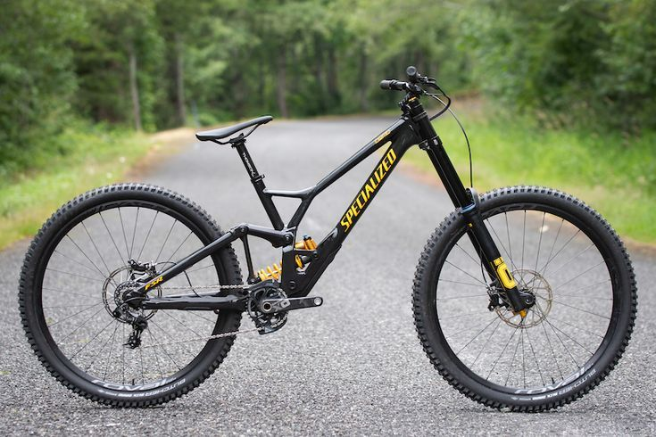
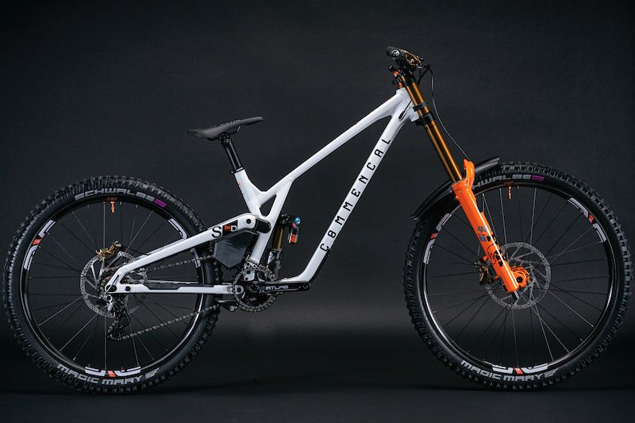
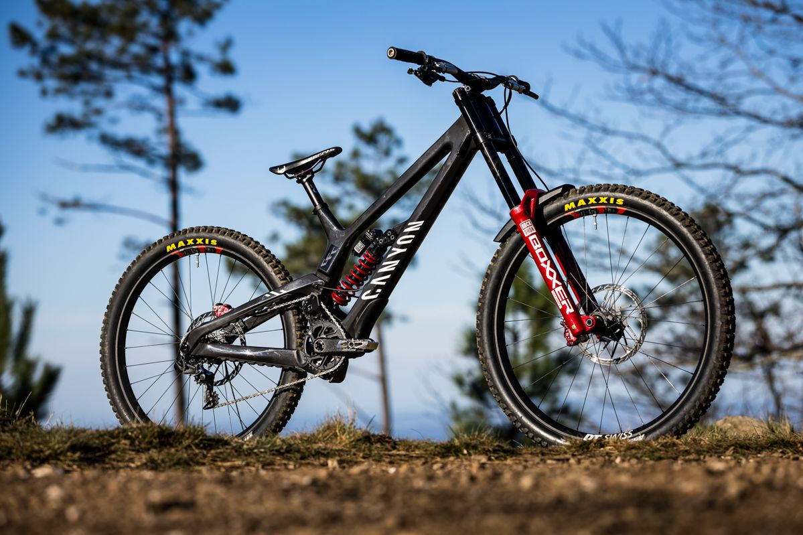
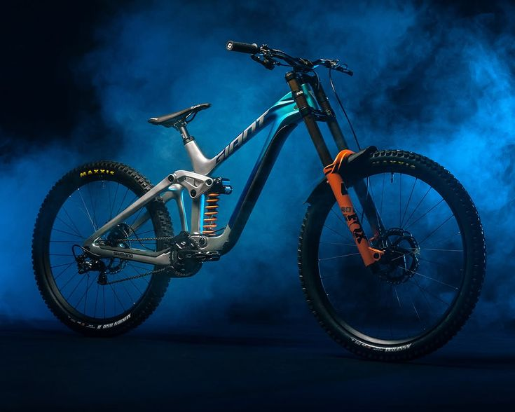
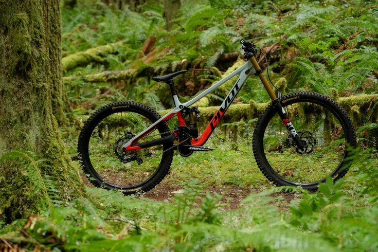

Bienvenido a Downhill Bikes
En esta página podrás encontrar información sobre las diferentes marcas y modelos de bicicletas que los atletas utilizan en competencias de downhill de alta exigencia.
¿Qué son las Bicicletas de Downhill?
Las bicicletas de downhill son diseñadas específicamente para descensos rápidos y técnicos.
Algunas de las marcas clave de las bicicletas de downhill son:
Specialized
La Specialized Demo es una de las bicicletas de downhill más reconocidas por su capacidad para enfrentar descensos extremos con total control. Su cuadro robusto y su suspensión de largo recorrido permiten absorber impactos fuertes y mantener tracción en terrenos muy técnicos. La geometría agresiva favorece la estabilidad a altas velocidades, haciendo que la bici se sienta segura y precisa incluso en secciones complicadas. Es una opción ideal para riders que buscan rendimiento puro en bajadas, ya sea en pistas de competencia o en bike parks exigentes.
Ver sitio oficial
Commencal
Las bicicletas de downhill de Commencal, especialmente la línea Supreme DH, son conocidas por su enfoque totalmente competitivo. Su sistema de suspensión de alto pivote ofrece una tracción excepcional y una estabilidad impresionante en terrenos muy rotos. Son bicis rígidas, rápidas y pensadas para riders que buscan rendimiento puro en pistas exigentes y de nivel profesional.
Ver sitio oficial
Canyon
La Canyon Sender destaca por combinar ligereza, rigidez y una suspensión muy sensible. Su geometría ajustable permite adaptarla a distintos estilos de manejo, manteniendo siempre un control sólido a altas velocidades. Es una bici equilibrada, ideal tanto para competidores como para quienes buscan una máquina confiable para bike parks y descensos técnicos.
Ver sitio oficial
Giant
La Giant Glory es una bicicleta de downhill robusta y estable, diseñada para absorber impactos fuertes sin perder precisión. Su suspensión Maestro ofrece buena tracción y control en secciones complicadas, mientras que su geometría favorece un manejo seguro y predecible. Es una opción versátil para riders que quieren una bici resistente y confiable para todo tipo de descensos
Ver sitio oficial
Pivot
La Pivot Phoenix se caracteriza por su cuadro de carbono ligero y su suspensión extremadamente eficiente. Ofrece una sensación de manejo muy precisa, con excelente respuesta en curvas y estabilidad en saltos grandes. Es una bici orientada a riders que buscan una combinación de agilidad, rigidez y rendimiento de alto nivel en pistas rápidas y técnicas.
Ver sitio oficial
| Downhill Bikes | |||||
|---|---|---|---|---|---|
| Marcas | Specialized Demo | Commencal Supreme DH | Canyon Sender | Giant Glory | Pivot Phoenix |
| Uso recomendado | Ideal para riders que buscan rendimiento puro en descensos técnicos y de alta velocidad. | Perfecta para competidores que quieren una bici rígida y rápida para pistas exigentes. | Equilibrada para competidores y riders que buscan una máquina confiable para bike parks. | Versátil para riders que quieren una bici resistente y confiable para todo tipo de descensos. | Orientada a riders que buscan agilidad, rigidez y rendimiento de alto nivel en pistas rápidas y técnicas. |
| Precio aproximado | $5,000 - $10,000 USD | $4,500 - $9,000 USD | $4,000 - $8,000 USD | $3,500 - $7,000 USD | $6,000 - $12,000 USD |